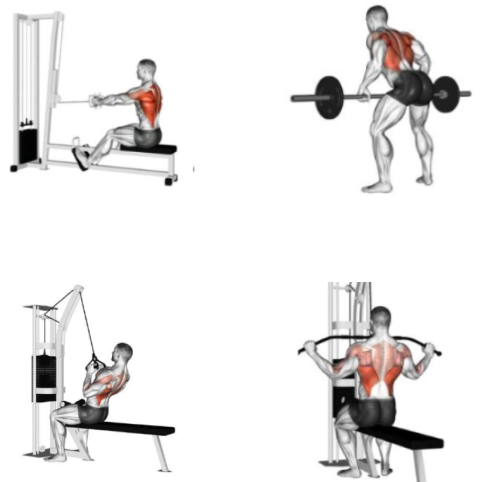

Seated cable row
Top left: This exercise involves pulling a cable handle towards your
chest while seated on a machine. It primarily works the latissimus
dorsi (lats), rhomboids, and trapezius muscles.
Bent-over barbell row:
Top right:This exercise involves bending over at the hips and pulling
a barbell towards your chest. It also works the lats, rhomboids, and
trapezius, but with a greater emphasis on the lower back muscles.
One-arm cable row:
Bottom left: This exercise involves pulling a cable handle towards
your chest with one arm while seated on a machine. It is a good
exercise for isolating the lats on each side.
Face pull:
Bottom right: This exercise involves pulling a cable handle towards your
face at a diagonal angle. It primarily works the rhomboids and trapezius
muscles, and can also help improve posture.